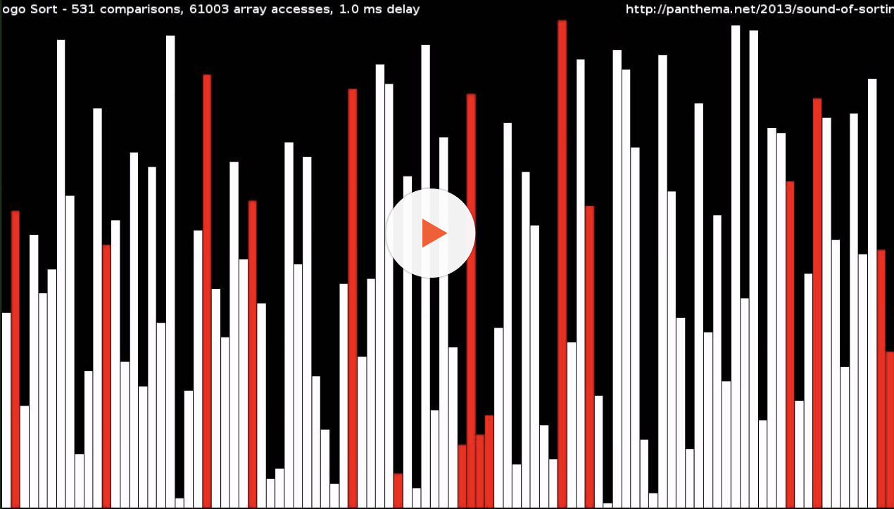

{BOGOSORT}
In computer science, bogosort (also known as permutation sort and stupid sort) is a sorting algorithm based on the generate and test paradigm. The function successively generates permutations of its input until it finds one that is sorted. It is not considered useful for sorting, but may be used for educational purposes, to contrast it with more efficient algorithms.
Two versions of this algorithm exist: a deterministic version that enumerates all permutations until it hits a sorted one, and a randomized version that randomly permutes its input. An analogy for the working of the latter version is to sort a deck of cards by throwing the deck into the air, picking the cards up at random, and repeating the process until the deck is sorted. In a worst-case scenario with this version, the random source is of low quality and happens to make the sorted permutation unboundedly unlikely to occur. The algorithm's name is a portmanteau of the words bogus and sort.
